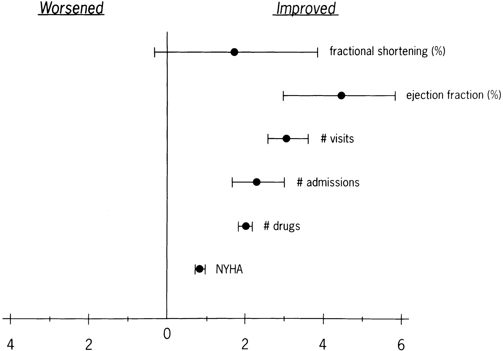

Khan MN et al. Pulmonary-Vein Isolation for Atrial Fibrillation in Patients with Heart Failure. N Engl J Med 2008; 359:1778-1785

Wood et al. Clinical outcomes after ablation and pacing therapy for atrial fibrillation : a meta-analysis. Circulation. 2000 Mar 14;101(10):1138-44.